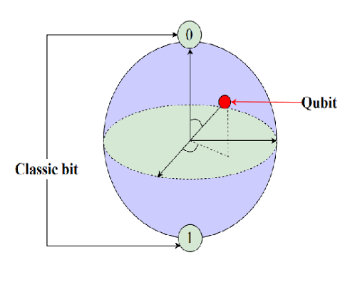
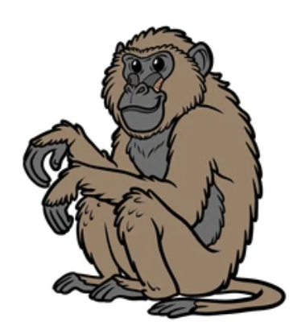
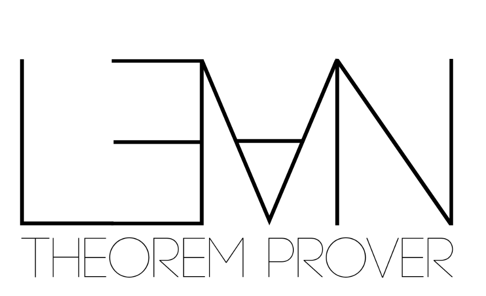

01 · Hard problems
Quantum benchmark
NP-hard quantum-compilation tasks. Amp in basic mode vs Claude Code + Fable 5 at max effort — cheaper, faster, equal-or-better correctness.
See the quantum results →
Baboons
& AI AgentsThe story of a benchmark that started with quantum computing and solving NP-complete optimization problems — and ended up as a gloriously silly first-person baboon-shooting JavaScript game. Same models, different agents, very different results.
A frontier model is the engine; the agent harness is the rest of the car — the transmission, steering and driver. Give two agents the identical model and task, and the better harness wins on time and dollars while matching quality. The Kaggle “New SDLC with Vibe Coding” whitepaper argues the harness carries the overwhelming share of the outcome — our results are consistent with that.
NP-hard quantum-compilation tasks. Amp in basic mode vs Claude Code + Fable 5 at max effort — cheaper, faster, equal-or-better correctness.
See the quantum results →
“How do I know the code is good?” 12 machine-checked theorems, 0 sorry, 247 CBMC checks — the checker is a provably sound certifier.
See the proofs →Same model on both agents (Claude Fable 5) build the same silly FPS. Pure harness — you pick the better game.
Play the face-off →We asked: “Are you sure QMAP is basic? Check again.” It conceded — qubit routing is NP-complete. The “basic” harness had quietly solved a hard problem, cheaper and faster. That is the whole thesis in one exchange.

Daniel Liezrowice designs and runs independent benchmarks of AI coding agents — measuring what actually moves speed, cost and correctness in the SDLC, and separating harness effects from model effects.
ESL helps teams adopt agentic AI with evidence, not hype: benchmark design, formal-verification pilots (Lean 4 / CBMC) and tooling strategy.